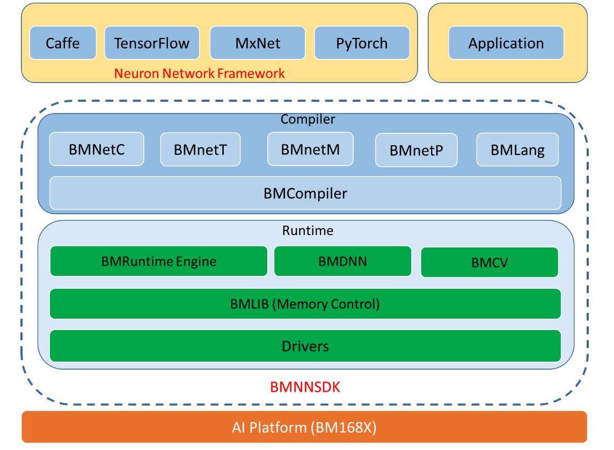
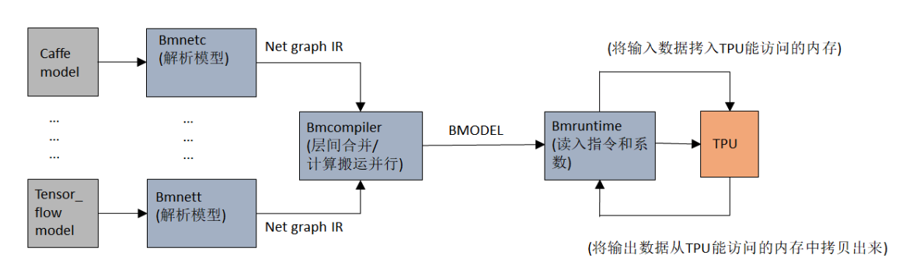

NNToolChain 基本概念介绍¶
BMNNSDK
比特大陆原创深度学习开发工具包
BM168x
比特大陆面向深度学习领域推出的第x代云端张量处理器
PCIE-Mode
一种产品形态，SDK运行于X86平台，BM168x作为PCIE接口的深度学习计算加速卡存在
SOC-Mode
一种产品形态，SDK独立运行于BM168x平台，支持通过千兆以太网与其他设备互联
BMCompile
是一个面向比特大陆 TPU处理器研发的深度神经网络的优化编译器，可以将深度学习框架定义的各种深度神经网络转化为TPU上运行的指令流。
BMRuntime: 匹配BMCompiler的运行时库，提供上层应用程序可编程调用的接口
BMDNN: 深度学习layer级别的加速库接口
BMCV: 使用TPU进行CV处理的加速库接口
BMNetC: 面向Caffe model的BMCompiler前端
BMNetT: 面向TensorFlow model的BMCompiler前端
BMNetM: 面向MxNet model的BMCompiler前端
BMNetP: 面向PyTorch model的BMCompiler前端
BMLang: 面向TPU的高级编程模型，用户开发时无需了解底层TPU硬件信息
bmodel: 面向比特大陆TPU处理器的深度神经网络模型文件格式
版本特性¶
BMNNSDK包含设备驱动、运行库、头文件和相应工具，主要特性如下：
- 设备驱动
- PCIE支持多种Linux发行版本和Linux内核。
- SOC模式提供ko模块，可以直接安装到BM168x SOC Linux Release。
- 运行库
- 提供深度学习推理引擎，提供最大的推理吞吐量和最简单的应用部署环境；
- 提供三层接口，网络级接口/layer级接口/指令集接口
- 利用TPU提供灵活的图像处理功能(BMCV)
- 提供运行库编程接口，用户可以直接操作bmlib/bmdnn等底层接口，进行深度的开发
- 运行库支持多线程、多进程，提供并发处理能力。
- 工具
- 提供bmnetc工具，支持Caffe网络模型进行编译
- 提供bmnett工具, 支持TensorFlow模型进行编译
- 提供bmnetm工具，支持MxNet模型进行编译
- 提供bmnetp工具，支持PyTorch模型进行编译
- 提供bm_model.bin工具，查看bmodel文件的参数信息，也可以将bmodel文件进行分解和合并
- 提供profiling的工具，展示每一层执行所使用的指令和指令所消耗的时间
- 提供bm_smi工具，支持对BM1682设备的运行状态进行监测
NNToolChain 整体架构¶
BMNNSDK（Bitmain Neural Network SDK）是比特大陆基于其自主研发的AI芯片，所定制的深度学习SDK，涵盖了神经网络推理阶段所需的模型优化、高效运行时支持等能力，为深度学习应用开发和部署提供易用、高效的全栈式解决方案。
BMNNSDK由Compiler和Runtime两部分组成，Compiler负责对各种深度神经网络模型（如caffemodel、tensorflow model等）进行编译和优化，最终生成运行时需要的Bmodel。Runtime负责驱动TPU芯片，为上层应用程序提供统一的可编程接口，既能使程序可以通过Compiler编译的Context进行神经网络推理，也能使用BMDNN和BMCV对DNN和CV算法进行加速，而用户无需关心底层硬件实现细节。
Compiler是一个模型转换工具，可以对各种框架的模型进行离线转换，将模型转换成TPU能够执行的模型格式，然后调用bmrutime在初始化阶段读取模型，运行时则将输入数据拷给TPU，TPU进行神经网络推理，再将输出读取出来。
